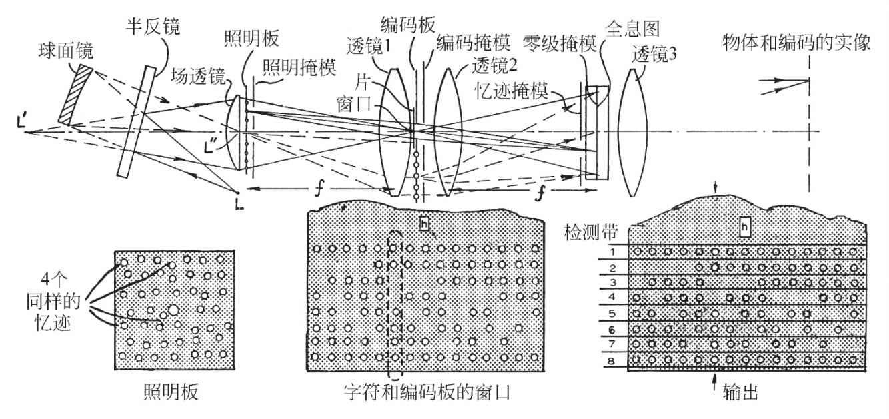

英文
英文盖伯
编者按
全息术理论的发明者丹尼斯·盖伯在本文中提出了该技术（最近因激光器的发展而有所改进）的一项应用，即应用于工程技术中长期存在的一个问题：字符（例如印刷字体）自动识别。全息术产生物体的像建立在包含有相干光波散射信息的基础之上。如果将同一个字符各种可能的变形所散射的光递增地制作出一张全息图，那么与任何一个变形相似的字符的照明就能够产生一个便于机器读出的视觉编码。盖伯的基本创意经过多次改进后，现在已经普遍用在基于全息术的图形识别技术中。 英文
17年前《自然》首次报道[1]了波前重建，即全息术，近年来这项技术又再次兴起，势头强劲。利思和乌帕特尼克斯[2]、斯托克[3]以及其他一些人已经对原来的方法做了重大的改进，并表明有可能利用半色调重建复杂的二维物体和三维物体，并达到过去不能实现的完美程度。激光器的发明在很大程度上推动了全息术的复苏，因为它使利用量级为10,000的干涉产生全息图成为可能，这样也可以充分利用细粒照相干板上的信息容量。 英文
我要说明的是，现在利用全息术有望解决计算机和其他数据处理装置中最为紧迫的问题之一——对具有多种变形字符的识别。 英文
波前重建包含了一个尚未被充分应用的原理。通常表现为：两束相干波同时照射在一张照相干板上，其中一束来自物体A，另一束来自物体B。如果全息图单独用A照明，B也会出现，反之亦然，全息图就是通过这样的方式将它们联系在一起的。至今，这个原理已经通过下述方式加以利用：若A是被关注的物体，B是光源（通常是简单的一个单个的光源），在重建中，全息图用B照明。现在我要对此进行一些改动。设A是一个字符，例如一个印刷的或手写的字母或数字，它可以被人读出，但不能被机器识别，再设B是点光源的一个组合，它形成了一个可被机器识别的编码。将A和B混合便可产生全息图。当A或一个与它十分相似的字符呈现在全息图前，并使用原来的照明光照亮时，编码B将立刻浮现出来。这表明全息图起到了转换器或编码装置的作用。 英文
这个原理的价值在于它所具有的巨大的识别容量，并且能存储在单个全息图中，对此人们最初也许不会察觉得到。我要说明的是，要对N个字符进行辨别，每个有M种变形，其乘积M·N能够达到上千甚至更高的量级。 英文
制作主全息图并利用它进行读取的光学装置如图1所示。假定记录介质是透射型的，例如显微胶片，不过也能够使用反射型介质。通过在“层”（姑且这样命名）上重复曝光而产生全息图。当然，这并不是说乳胶中存在物理上的分离。每一层都对应N个字符中的一个字符，每个都具有M种变形的待辨别字符，并用一个编码字标记。这个层包含了部分全息图，称为各个变形的“忆迹”，它们并排相连并略微重叠。每个忆迹是用一个方向上的光束照射产生的，又因为照相干板位于观测字符的透镜的后焦平面上，因此是一个“傅里叶全息图”。其优点在于全息图具有平移不变性，换言之，字符只需在窗口中单独出现，而其所处的位置是无关紧要的。与良好地记录一个字符所需要的面积相比，相应的一个忆迹并不需要占用照相干板更大的面积。而作为一个严谨的例子，我们将假设在50毫米×50毫米的照相干板上有120个直径约为5毫米的忆迹，这就足够在无须重叠的方式下记录30个变形，其中每个有4个或6个“同样的”忆迹。图1显示了这是如何实现的。 英文

图1．制作编码全息图并将它读出的装置 英文
激光器的光束从点L射出，通过一个包含有一个球面镜和一个半反镜的分束器后产生两个像L′和L″。其中第一个像被用作照明光；位于照明板中心孔处的第二个像被用作编码板。照明板在场透镜的背后，其由一片有120个微透镜的模压塑料板构成，在微透镜外为黑色。这些微透镜形成了120个点光源，它们穿过透镜1照射在包含字符的窗口上，使照明点移入了星空。点光源与忆迹一一对应。它们的排列稍有随机性是有利的。当任何一个变形发生时，一次均可获得4个同样的忆迹。为了提高全息图的分辨率，这些忆迹要尽可能地相互远离。用掩模对它们进行挑选，每个变形使用一个不同的带有4个孔的掩模。 英文
位于照明板中心的点光源L″同样通过透镜1照明编码板，透镜1在这一区域作为场透镜使用。与照明器类似，编码板是一块模压塑料板。它包含的编码字以一群照明点的形式存在，它们排成一个或几个阵列。使用自检编码具有一定的优点，因为其中每个字都具有相同数目的编码点。在这个例子中有6个位置，其中2个始终为暗，另外4个被照亮。这个编码具有的字数为(6×5)/(1×2)=15。已经又增加了2个位置。这对字符的分辨率并没有贡献，但提高了信噪比，因为每个有效的字符必须有8个点被照亮。 英文
在主全息图的制作过程中，用一个独特的编码字来标记一个层中所有的忆迹，换言之，它们是同时曝光的，而每个编码字的选择取决于掩模。但由于每个编码字都照明了全息图的整个区域，因此必须在靠近照相干板的平面附近再使用一个掩模，它遮去了在任何时刻获得的忆迹区域以外的光。这样就有可能观测到最佳照明的规律，最佳照明要求对于任一忆迹，来自字符和其编码字的光的总和都大致相等。 英文
相比于其负片，白底黑字的字母不太适合于鉴别，因为它们之间共同的部分即它们所有的白色区域太多。但这一不利条件可以通过在全息图平面中再加一个掩模来消除，这个掩模遮去了所有的非衍射光。根据巴比涅原理，这样可使一个字符转换为它的负片。令所有的照明点通过一个清晰的窗口同时对照相干板曝光就可以很容易地制作出这类掩模。 英文
照相干板经M·N次连续曝光后，增至一个适合介质的光密度，再通过处理和洗印就制成了主全息图，总伽马值最好为2，并将照片放回原始位置。在读取过程中使用了照明光的所有点源，而整个编码板是被遮盖住的。透镜3用于观测，它产生了一个编码板的实像。这时如果记录介质被拖过窗口，只要有字符或其变形在其中出现，其编码字便会立刻显现出来。在像平面放置一个掩模是有好处的，这个掩模是编码板的复制品，具有很细的孔，因此可以排除信号光外的所有光。这类掩模也能通过照相而制得。 英文
读取编码字的方法是：将与编码中某一位置相对应的一个带中出现的所有的光相加，并将它导入一个单独的光电探测器。每个探测器与一水平鉴别器相配，以排除低于一定水平的乱真信号。这种方法简单，但只具有一般的鉴别能力，因为如果有些字符没有明显的区别，那么其他字符的编码字的光可能会出现在同一带内。对于那些没有明显区别的字符，可以通过制作尽可能不同的编码字来减少这种情况。但通过更加复杂的装置可以达到最大的鉴别力。在这个装置中，编码板的像投影在相机的屏上。编码字每隔一段时间闪现，占这个周期的10%~30%，而闪现的时间间隔与分配给每个字母的时间相对应。在闪现间隔的时间内，所有的编码位置被逐一扫描，那些高于一定强度水平的点被传送到一个存储元件上，例如磁心存储器。但是直到一个字中全部的点都出现，这个记录才会被清除。如果点的总数被记录下来，那么这个编码字就会被传送到计算机中。 英文
全息照相方法的高辨别能力来自其角度的高分辨率。例如假定N=35，M=30，则M·N=1050。提交给读出器的字符所对应的4个忆迹的组接收到光的1/30，其中约1/35会发生衍射，因此全部的光约占总数的1/103。（当然，没有将白底黑字的记录计算在内，因为其非衍射光的量级接近于零。）也就是说，在适当的条件下，当忆迹从字符中和从编码字中接收到的光近乎相等时，衍射光的1/4将进入编码字的重建中去。此外，一半出现在物体中，另外的1/4进入编码字的“孪生”像中，然而，由于这部分与字符交互调制，并且对于识别没有帮助，所以被消除了。但是有用的1/4集中在极小的立体角中。例如，如果4个或6个同样的忆迹彼此之间的距离间隔约为25毫米，那么与一个编码点相对应的光将大部分集中在量级为10–8的立体角内。也就是说，占总量1/104的光分布在10个编码点上，这意味着一个编码点上出现的光为1/105，并且集中在一个可能为布满全部编码的10–6的立体角中，汇集度为10。此外，这种估计有些悲观，因为它忽略了在同一层中略有差异的变形忆迹对字符的证实。 英文
总之，我们完全有理由相信，单个全息图可以在所有的数字和字母表中的字母之间进行辨别，其中每个有30个变形。 英文
（沈乃澂 翻译；熊秉衡 审稿）